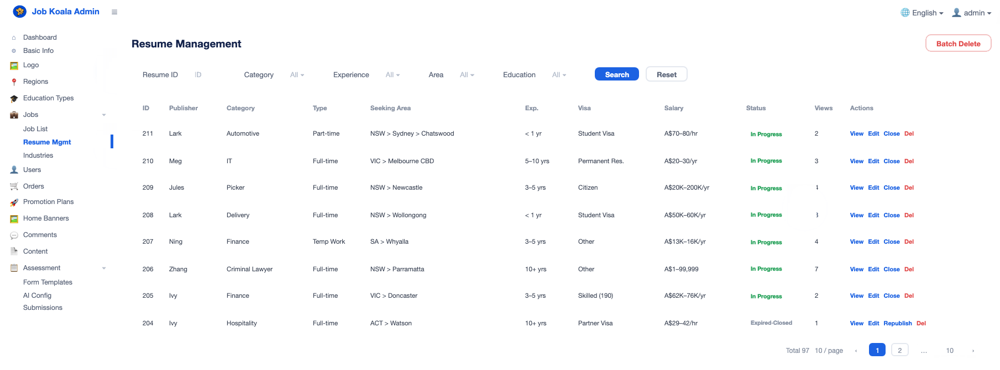
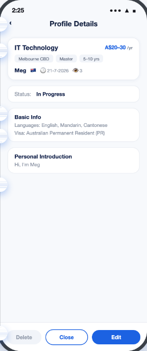

4.5.2Resume Management
Every job-seeker resume on the platform in one table — who published what, its status and its reach.
🐨Job Koala Admin
Dashboard
SYSTEM
Administrators
Roles
Basic Info
Logs
Regions
Education Types
JOBS
Job List
Resume Management
Industries
Users
ORDERS
Order List
Promotion Plans
Home Banners
Comments
Verification Review
CONTENT
FAQ
Notification Templates
Privacy Policy
User Agreement
ASSESSMENT
Form Templates
AI Config
Assessment Records
Consultants
Consultant Pricing

Edit Job Seeker✕
Basic InfoOperation Info
CancelConfirm
LIVE · PROFILE DETAILS

1
Edit opens the whole resume
Two tabs — Basic Info is the
resume the seeker filled in; Operation Info is the platform's own record. Operations can
correct any field here, including contact details.
2
Job type, category, expected pay
range and schedule, language, visa, education, experience, seeking area and the free-text
description — one-for-one with 2.7 Post My Profile.
3
4
Confirm writes straight through — the
resume is live again the moment it saves. Closing one is a status change, not a delete;
Republish brings it back.